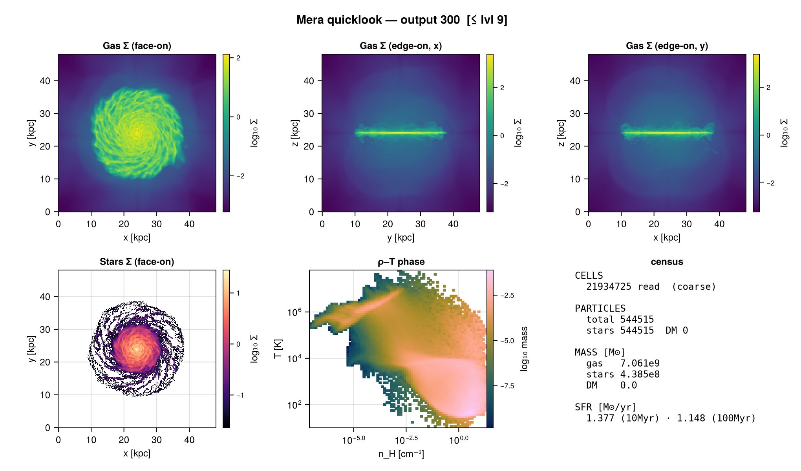
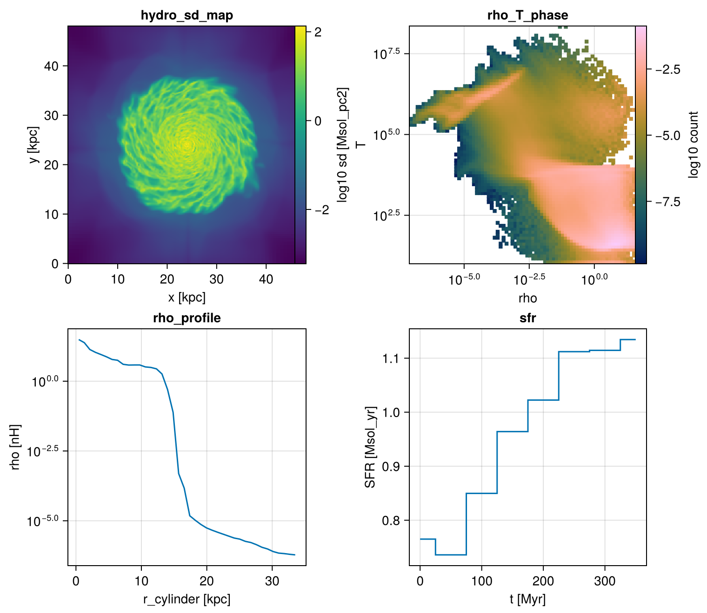
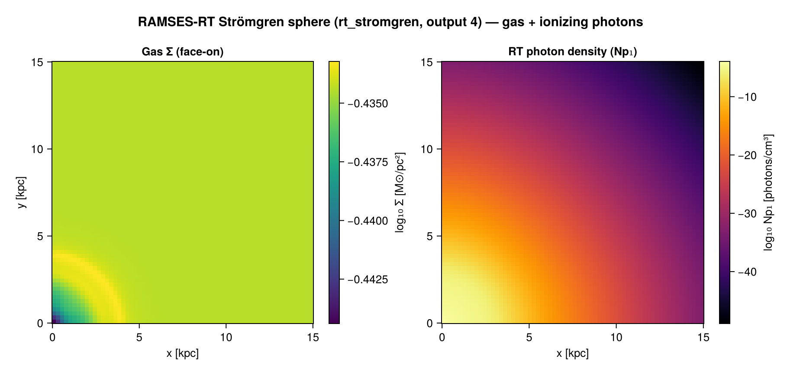

First Look
Two complementary ways to get a first impression of a simulation output:
quicklook— a fixed, one-call dashboard (fast, budgeted): surface-density maps along each axis (plus stellar & dark-matter maps when particles are present), the ρ–T phase diagram, and a global census of cells, particles, masses and SFR.report— the composable form: you choose which cards (projections, phase diagrams, profiles, star-formation history, scalar totals/fractions, cross-datatype ratios) across any datatype, with a cost/runtime estimate beforehand and a wall-time budget.
Use quicklook for the instant overview; reach for report when you want to choose what goes in.
quicklook — the one-call dashboard
quicklook reads the header for instant facts and — unless you ask for header-only — does a single budgeted read to build the dashboard and print a compact summary:
using Mera
q = quicklook(80; path="/sim/cosmo") # the cosmological zoom shown below┌─ Mera quicklook ── output 80 (RAMSES) ───────────────
│ box : 62140.0 kpc levels 6–16 (finest 948.1 pc)
│ grid : ndim 3 · ncpu 16 · nvarh 6
│ time : -1574.0 Myr z = 0.1426
│ particles : 1090895 total — stars 31990 · DM 1058905
│ read : 1058982 cells ⚠ APPROXIMATE (coarse levels ≤ 9 of 16)
│ gas mass : 2.21e15 M⊙ (approx.)
│ star mass : 1.22e11 M⊙ DM mass : 1.134e16 M⊙
│ current SFR: 7.254 (10 Myr) · 4.381 (100 Myr) M⊙/yr
│ nH range : 4.221e-9 … 5.798e-4 cm⁻³
│ T range : 45.13 … 3.933e7 K
│ figures : .maps (Σ x,y,z + stars,dm) · .phase (ρ–T) · .budget (mass + SFR)
└─ 17.4 s ──────────────────────────────────![The quicklook dashboard for a **cosmological zoom**: gas surface density along z (face-on) and x, y (edge-on); face-on stellar and dark-matter surface density; the ρ–T phase diagram; and a text census of cell/particle counts, masses and SFR. The grid grows with the components present (here gas + stars + dark matter). Each component uses a meaningful perceptually-uniform, colorblind-safe colormap — gas density `viridis`, stars `magma` (warm), dark matter `cividis` (the CVD-optimised cool map), ρ–T phase `viridis`.](../assets/features/quicklook_dashboard.png)
The same call on an isolated disk galaxy (gas + stars, no dark matter) — face-on plus the two edge-on views show the disk and its thickness, and the dark-matter panel is simply omitted:

What you get
The call returns a QuickLookResult:
q.summary— header facts and estimates (box, levels, finest cell, time/redshift, the cell & particle census, masses, density/temperature ranges, read time).q.maps— surface-density projections: gas along each axis (q.maps.z/.x/.y, each anAMRMapsTypewith.maps[:sd]), plus face-onq.maps.stars/q.maps.dmwhen particles are present.q.phase— the ρ–T phase histogram (q.phase.H,q.phase.xedges,q.phase.yedges).q.budget— the global snapshot budget:gas_mass_Msol, and (with particles)stellar_mass_Msol,dm_mass_Msol,n_stars,n_dm, and the current SFR (sfr10,sfr100,sfr_mean, seesfr_snapshot).
Selecting components & projections
By default the dashboard shows every component present, with the three gas projections. Two keywords trim it to exactly what you want (and skip the reads you don't need):
datatypes— any subset of[:hydro, :stars, :dm].[:hydro]shows gas only;[:stars]or[:dm]show that population's face-on Σ and skip the gas read entirely (faster). The census and panels adapt to whatever was read.directions— any subset of[:z, :x, :y]for the gas maps (:z= face-on,:x/:y= edge-on).directions=[:z]gives a single face-on map — the most compact dashboard.
quicklook(300; path="/sim", directions=[:z]) # one gas projection (compact)
quicklook(300; path="/sim", datatypes=[:hydro]) # gas only — no particle maps
quicklook(300; path="/sim", datatypes=[:stars]) # stellar map only (gas read skipped)
quicklook(300; path="/sim", datatypes=[:dm]) # dark-matter map only
quicklook(300; path="/sim", datatypes=[:hydro, :stars], directions=[:z, :x]) # face-on + one edge-onBudgeted reading — fast on big outputs
quicklook reads gas and particles differently, so it stays quick on large simulations:
read=false— header only (sub-second): box, levels, finest cell, ncpu, fields, time/redshift, the particle census — no field data read.budget— a gas cell-count cap (default2_000_000). If the full output is predicted larger, only the coarse AMR levels are read (spatially complete, lower resolution); the result is flaggedsampled=trueand gas-derived numbers are labelled approximate.lmaxoverrides the choice.- Particles are read in full by default (a particle file is tiny next to the AMR hydro), which makes the stellar/DM mass and SFR exact even when the gas read is coarse.
quicklook(300; path="/sim/mw", read=false) # instant header facts only
quicklook(300; path="/sim/mw", budget=500_000) # cap the gas read on a huge outputThe fast estimates are reliable for extensive totals but not for peak quantities:
- Gas mass — exact even on a coarse read: de-refinement is mass/volume-conserving, so the total is unchanged (measured 0.00% error reading ⅓ of the cells).
- Stellar / dark-matter mass, counts, SFR — within ~10% under a particle subsample (an unbiased estimate scaled by 1/fraction; noisier for rarer, clustered sub-populations).
- nH / T ranges — lower bounds on a coarse read: the densest, hottest gas lives in the finest cells, which coarsening averages away (the maxima can read 50–90% low). For the true extremes, read at full resolution.
The dashboard marks the coarse read (⚠), labels gas mass mass-conserving, and flags the ranges as peaks smoothed — so each number says how far to trust it.
Very large particle runs — particle_subsample
For runs where even reading all particle positions is the cost, particle_subsample reads only ~that fraction of the particle CPU files — skipping whole files, so it cuts both I/O and peak memory. RAMSES load-balances its domains to ~equal particles per CPU, so this reads ~that fraction of the particles; the census, masses and SFR are then scaled up by 1/fraction and flagged ⚠ approximate (an unbiased estimate for the total, noisier for rarer/clustered sub-populations):
quicklook(300; path="/sim/cosmo", particle_subsample=0.1) # read ~10% of particle filesThe same subsample keyword is available directly on getparticles (subsample=0.1); scale extensive quantities by 1/subsample for whole-snapshot estimates. For a localized region instead, getparticles(info; xrange=…) reads only the overlapping CPU domains.
Plotting
quicklookplot renders the multi-panel dashboard — gas Σ along x/y/z, face-on stellar & dark-matter Σ (when present), the ρ–T phase diagram, and a text census — with colorblind-safe colormaps (needs a Makie backend):
using CairoMakie
q = quicklook(300; path="/sim/mw")
fig = quicklookplot(q)
CairoMakie.save("quicklook.png", fig)report — composable cards
report turns a simulation output into one composable first-look summary: you pick which quantities and Mera functions to combine — projections, phase diagrams, profiles, star-formation history, scalar totals or fractions, cross-datatype ratios — across any datatype (hydro, particles, gravity, RT, clumps), and render the result as a text dashboard, a plot grid, or a saved file. Before it runs you get a cost/runtime estimate, and an optional budget keeps it within a wall-time target.
report(400; path="/sim") # default: Σ map + ρ–T phase + disk ρ(R) profile + SFR history (ascii)The no-argument default is the quicklook figures (gas Σ map · ρ–T phase · cylindrical density profile) plus a star-formation-history card — matching the star formation quicklook headlines in its census; the SFR card skips gracefully on an output without star particles. To compose your own, list cards:
report(400; path="/sim", output=:ascii, cards=[
ProjectionCard(:hydro, :sd; unit=:Msol_pc2, res=512), # surface-density map
PhaseCard(:hydro, :rho, :T; weight=:mass, xunit=:nH, yunit=:K), # ρ–T phase diagram
ProfileCard(:hydro, :r_cylinder, :rho; weight=:mass, nbins=40, # disk radial density profile
geometry=:cylindrical, center=[:bc], range_unit=:kpc, xunit=:kpc, unit=:nH, yscale=:log),
ScalarCard(:hydro, :mass; reduce=:sum, unit=:Msol), # absolute gas mass
ScalarCard(:hydro, :mass; fraction=true, label="cold_frac", # cold-gas mass fraction
mask = o -> getvar(o, :T, :K) .< 1e4),
SFRCard(:particles; tbinsize=50.0), # star-formation history
])report reads each datatype once (with only the variables the cards actually need, via getvar_requirements), computes every card, and returns a QuickReport — which you can re-render or analyse further. With a Makie backend loaded, render(rep, :plot) lays the cards out as a figure grid:
using CairoMakie
rep = report(300; path="/sim", output=:none, cards=[ … ])
fig = render(rep, :plot; ncols=2)
CairoMakie.save("report.png", fig)
The cards
Each card names a datatype (first argument), a quantity, optional unit, and card-specific options. Any name getvar understands works — including your own add_field fields.
| Card | Wraps | Example |
|---|---|---|
ProjectionCard | projection | ProjectionCard(:hydro, :sd; unit=:Msol_pc2, res=512, direction=:edgeon) |
PhaseCard | phase | PhaseCard(:hydro, :rho, :T; weight=:mass, xunit=:nH, yunit=:K) |
ProfileCard | profile | ProfileCard(:hydro, :r_sphere, :vz; weight=:mass, nbins=40) |
ScalarCard | a reduction | ScalarCard(:particles, :mass; reduce=:sum, unit=:Msol) |
SFRCard | sfr | SFRCard(:particles; tbinsize=50.0, mode=:probability) |
CombinedCard | cross-datatype | baryon_fraction() |
Absolute values vs fractions
Every aggregating card supports a fraction toggle. ScalarCard(...; fraction=true) divides by the total of relative_to (or the same variable); mask restricts the rows:
ScalarCard(:hydro, :mass; reduce=:sum, unit=:Msol) # absolute [M⊙]
ScalarCard(:hydro, :mass; fraction=true, mask = o -> getvar(o,:T,:K).<1e4) # fraction of totalProfiles: geometry & axis scale
A ProfileCard's geometry sets the radial coordinate. For a disk galaxy use xvar=:r_cylinder, geometry=:cylindrical — radius in the disk plane — which is the default in the quicklook trio; a halo/spheroid is better with :r_sphere, geometry=:spherical. yscale controls the plotted y-axis: :log (log₁₀), :identity (linear), or :auto (log when the profile is positive and spans ≳ 1.5 decades, e.g. density). So the default density profile is cylindrical with a log y-axis.
ProfileCard(:hydro, :r_cylinder, :rho; geometry=:cylindrical, weight=:mass, unit=:nH, yscale=:log) # disk
ProfileCard(:hydro, :r_sphere, :rho; geometry=:spherical, weight=:mass, unit=:nH) # halo
ProfileCard(:hydro, :r_cylinder, :vz; geometry=:cylindrical, weight=:mass, yscale=:identity) # signed → linearStar formation
SFRCard (and the standalone sfr) build the star-formation history from the star particles (birth ≠ 0): mode=:none gives M⊙/yr, mode=:probability the normalised SFH. For a single-number current SFR from one snapshot use sfr_snapshot — the stellar mass formed within a recent window divided by that window (e.g. 5/10/100 Myr), plus the lifetime mean. Both prefer a stored initial-mass field when present (mass=:auto), since the current particle mass underestimates the formed mass after stellar mass loss. Outputs without stars yield zeros, not an error.
Cross-datatype cards
CombinedCard reads several datatypes and combines them. Two are built in:
baryon_fraction() # (gas + stars) / (gas + stars + dark matter) [hydro + particles]
clump_mass_fraction() # total clump mass / total gas mass [clumps + hydro]
# your own:
CombinedCard([:hydro, :particles]; label="gas_to_star") do d
sum(getvar(d[:hydro], :mass, :Msol)) / sum(getvar(d[:particles], :mass, :Msol))
endOff-axis maps & custom fields
Projection cards take the same view controls as projection — direction=:faceon/:edgeon tilt the map to the disk (the report automatically reads the velocities needed to orient it):
ProjectionCard(:hydro, :sd; unit=:Msol_pc2, res=512, direction=:edgeon) # edge-on Σ mapSee Off-axis Projection for the full set of view options. Any field you register with add_field (see Derived Fields & add_field) is usable as a card quantity, and the report reads only its dependencies:
add_field(:vmag, (o,d) -> sqrt.(d[:vx].^2 .+ d[:vy].^2 .+ d[:vz].^2);
depends_on=[:vx,:vy,:vz], unit=:km_s)
ProfileCard(:hydro, :r_cylinder, :vmag; weight=:mass, nbins=40) # uses the custom fieldDatatypes & graceful skipping
Scalar and profile cards work on hydro, particles, gravity, and clumps; projection cards work on hydro and particles (gravity/RT projection needs hydro pairing). A card is skipped with a note — never an error — when its datatype is absent from the output, or when it needs a variable that isn't stored (e.g. an RT :xHII card on a non-RT run). So a "kitchen-sink" plan runs unchanged on a hydro-only output.
On an RT simulation the standard quantities are shown correctly: RAMSES stores the radiative- transfer fields (photon densities, fluxes, ionization fractions) in separate files read by getrt, so they are not part of nvarh — quicklook and the hydro cards read the usual gas variables (:rho, :vx…, :p) and derive :sd, :T, the ρ–T phase and the budget exactly as on a non-RT run. The RT fields themselves are not in the quicklook dashboard, but a report can include them directly with an RT projection card — the engine reads the RT data via getrt, and an RtDataType projects its photon fields (mass-weighting auto-falls back to volume, since RT carries no mass):
report(output; path="/sim", cards=[ProjectionCard(:rt, :Np1; res=512)]) # photon density, group 1
Cost estimate & budget
Inspect a plan's predicted cost with zero I/O before running:
plan = ReportPlan(400; path="/sim", cards=[...])
preview(plan) # prints a per-card cells/time table + total
estimate(plan) # the same numbers as a NamedTupleThe model self-calibrates — every real report learns this machine's timing; calibrate!(400; path="/sim") runs a quick active calibration. Keep a run within a wall-time target with the budget, which drops the read level first, then shrinks resolution/bins:
report(plan; budget_s=10.0) # auto-fit ~10 s
downsample(plan, 10.0) # or get the trimmed plan explicitlyOutput backends
rep = report(plan; output=:none) # compute only, render later
render(rep, :ascii) # text dashboard (default)
render(rep, :plot; ncols=2) # Makie Figure grid (needs `using CairoMakie`)
render(rep, :jld2; filename="r.jld2") # full round-trip
render(rep, :file; mode=:dir, prefix="r") # report.jld2 + summary.txt + one PNG per card
loadreport("r.jld2") # reload a saved QuickReportPlotting lives in a package extension — load any Makie backend (using CairoMakie) and :plot / :file mode=:dir activate. Without one, those backends print a clear "load CairoMakie" message; everything else (ascii / jld2 / :file mode=:bundle) works with no extra dependencies.
Working with the result
rep.cards # Vector{ReportResultCard}: each has .label .kind .datatype .data .meta
rep.cards[1].data.z # e.g. the raw projection matrix — re-analyzable / re-plottable
rep.cost.per_card # (label, seconds) per card
rep.summary # header facts (box, levels, time/redshift, sampled?)
rep.provenance # mera/julia version, timestamp, the planAPI
The result types (ReportPlan, QuickReport, ReportResultCard, QuickLookResult) and the card recipe types are documented in the Complete API Reference.
Mera.report — Function
report(plan::ReportPlan; output=:ascii, budget_s=nothing, verbose=true)
report(sim_output::Int; path=".", cards=:default, output=:ascii, lmax=-1, budget=2_000_000, budget_s=nothing, verbose=true)Run a composable first-look [ReportPlan] and return a [QuickReport]. Each datatype is read once with the minimal variable set unioned across its cards (via getvar_requirements). output (the backend) is rendered immediately — :ascii prints a dashboard, :jld2/:file write the report — and the QuickReport is returned for re-rendering / re-analysis.
report(1; path=sim, output=:ascii, cards=[
ProjectionCard(:hydro, :sd; unit=:Msol_pc2, res=512),
PhaseCard(:hydro, :rho, :T; weight=:mass, xunit=:nH, yunit=:K),
ScalarCard(:hydro, :mass; reduce=:sum, unit=:Msol),
])Mera.preview — Function
Mera.estimate — Function
estimate(plan::ReportPlan) -> NamedTupleZero-I/O runtime estimate for a [ReportPlan]: returns (per_card, read_s, compute_s, total_s, level, cells, sampled, calibrated) where per_card is a vector of (label, kind, datatype, cells, seconds). Absolute times are advisory until the cost model is calibrate!d (calibrated=false ⇒ treat as ±2×).
Mera.downsample — Function
downsample(plan::ReportPlan, target_s) -> ReportPlanReturn a new plan trimmed to an estimated wall-time of target_s seconds: first drop the read level (fewest cells — helps every card), then shrink projection resolution and histogram bins. Used by report(...; budget_s=target_s). Never goes below levelmin / minimum sane resolution.
Mera.calibrate! — Function
calibrate!(output; path=".", budget=200_000) -> CostModelActively calibrate the cost model for this machine/output by running a tiny report (one coarse level + small projection/phase/profile/scalar) and learning the timing coefficients. ~0.5–3 s, once. (The model also self-calibrates passively after every real report.)
Mera.render — Function
render(report::QuickReport, backend::Symbol; kwargs...)Render a [QuickReport] to a backend: :ascii (text dashboard, default), :jld2 (full round-trip via loadreport), :file (a .jld2 + _summary.txt bundle), or :plot (requires a Makie package extension — using CairoMakie).
Mera.loadreport — Function
loadreport(filename) -> QuickReportReload a [QuickReport] written with render(report, :jld2) (or :file).
Mera.sfr — Function
sfr(p::PartDataType; tbinsize=10.0, trange=[0.0, missing], mass=:auto, mask=[false],
mode=:none, closed=:left) -> (t_Myr, sfr)Star-formation history from the star particles: t_Myr are the left bin edges [Myr] and sfr is the star-formation rate per bin [M⊙/yr] (mass formed ÷ bin width).
Star particles are selected by the universal RAMSES sentinel birth ≠ 0 (non-star particles have birth == 0); the sign/scale of the stored birth time varies between runs, so a birth > 0 test is not reliable. The formation-time axis is physical and RAMSES-version aware:
non-cosmological runs — the proper birth time
getvar(:birth, :Myr)(formation time in the run's own time coordinate; it may be negative — the origin is arbitrary and does not affect the SFH shape).cosmological runs —
:birthis a super-conformal time (≤ 0 at a = 1), not a physical time, sosfrbins the physicalgetvar(:formation_time, :Myr)(cosmic time of formation, from the Friedmann table) instead.tbinsize— bin width in Myr.trange—[t0, t1]in Myr; each entry defaults tomissing⇒ the earliest / latest stellar formation time, so the bins span exactly the star-formation history.mass— mass field to integrate;:auto(default) prefers a stored initial-mass column (:minit,:mass_init, …) and falls back to current:mass. SFR should use the initial stellar mass; current mass underestimates it by post-formation mass loss.mask— a Bool vector over the particles (length == number of particles) to subselect.mode—:none(M⊙/yr) or:probability(normalised SFH fraction).eta_sn,t_sn_delay— SN mass-loss correction for runs that store only the current mass: a star older thant_sn_delayMyr (SN onset, default 5) has shed a fractioneta_snof its birth mass, so its mass is rescaled by1/(1-eta_sn)to recover the initial mass. Defaulteta_sn=0is a no-op; ignored (with a warning) when an initial-mass field is used — it is already the birth mass.
t, s = sfr(parts; tbinsize=50.0) # SFR [M⊙/yr] vs t [Myr]
t, s = sfr(parts; mass=:minit) # force a specific initial-mass field
t, s = sfr(parts; eta_sn=0.2) # reconstruct birth mass from current mass (20% SN loss)See also sfr_snapshot for the current SFR from a single snapshot.
Mera.ProjectionCard — Type
ProjectionCard(kind, var; unit=:standard, weight=:mass, res=256, direction=:z, center=[:bc], range_unit=:standard, label="")A projection card (surface-density / mass-weighted map) for a ReportPlan.
Mera.PhaseCard — Type
PhaseCard(kind, xvar, yvar; weight=:mass, nbins=(80,80), xscale=:log, yscale=:log, xunit=:standard, yunit=:standard, label="")A phase (2-D histogram) card for a ReportPlan.
Mera.ProfileCard — Type
ProfileCard(kind, xvar, yvar=nothing; weight=:mass, nbins=40, geometry=:none, unit=:standard, xunit=:standard, range_unit=:standard, center=[:bc], yscale=:auto, label="")A profile (1-D radial/other profile) card for a ReportPlan. For a disk galaxy use xvar=:r_cylinder, geometry=:cylindrical (radius in the disk plane); :r_sphere, geometry=:spherical suits a halo/spheroid. yscale sets the y-axis when plotted: :log/:log10 (log₁₀), :identity (linear), or :auto (log when the profile is positive and spans ≳ 1.5 decades, e.g. density).
Mera.ScalarCard — Type
ScalarCard(kind, var; reduce=:sum, unit=:standard, fraction=false, relative_to=nothing, mask=nothing, label="")A scalar reduction card (reduce ∈ :sum,:mean,:extrema,:count). fraction=true divides by the total of relative_to (or var); mask=obj->BitVector restricts the rows.
Mera.SFRCard — Type
SFRCard(kind=:particles; tbinsize=10.0, trange=[0.0,missing], unit=:Msol_yr, mode=:none, mass=:auto, mask=nothing, label="")A star-formation-history card (sfr). mode=:probability gives the normalised SFH (a fraction); mass=:auto prefers a stored initial-mass field; mask=obj->BitVector subselects.
Mera.CombinedCard — Type
CombinedCard(datatypes, compute; unit=:fraction, label="combined")
CombinedCard(datatypes; unit=:fraction, label="combined") do datas … endA cross-datatype scalar card. compute(datas) receives a Dict{Symbol,Any} of the read data objects for datatypes and returns a number. Computed only if all datatypes are present. See the built-ins baryon_fraction and clump_mass_fraction.
Mera.baryon_fraction — Function
baryon_fraction(; label="baryon_fraction")Cross-datatype card: (gas + stars) / (gas + stars + dark matter), reading hydro + particles.
Mera.clump_mass_fraction — Function
clump_mass_fraction(; label="clump_mass_fraction")Cross-datatype card: total clump mass / total gas mass, reading clumps + hydro.
See also
- Derived Fields & add_field — register custom quantities usable as cards.
- Off-axis Projection —
:faceon/:edgeonand arbitrary lines of sight. - Profiles & Phase Diagrams — the profile/phase tools behind the cards.
- Star-Formation Rate — the standalone
sfr/sfr_snapshotand the cosmological handling.